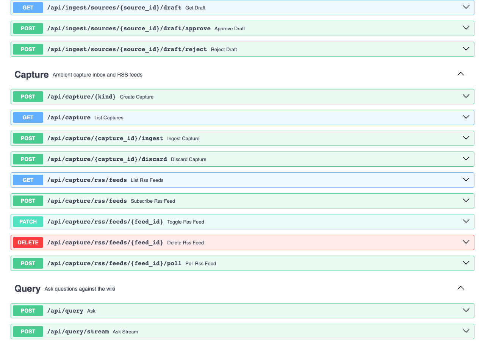

PASS Feature Real evidence: draft review, approval, and rejection workflows
compilation.interactive mode is enabled, the compiler creates
a CompilationDraft with key takeaways for human review instead of saving directly to the wiki.
Three endpoints — GET /draft, POST /draft/approve, POST /draft/reject —
let the user review, guide, and approve or reject the LLM output before it becomes an article.
All responses below are real, captured from a live WikiMind instance on 2026-05-09.
When interactive compilation creates a draft, the source enters review_pending status.
$ curl -s http://127.0.0.1:7842/api/ingest/sources/72476975-94af-4fa9-801b-5d8ab5369c0c \ -H "Authorization: Bearer $TOKEN" { "title": "Neural Networks Overview", "user_id": "dev@wikimind.dev", "source_type": "text", "published_date": null, "ingested_at": "2026-05-09T17:06:51.802168", "token_count": 134, "id": "72476975-94af-4fa9-801b-5d8ab5369c0c", "status": "review_pending", "compiled_at": "2026-05-09T17:06:58.359721", "error_message": null, "has_original": false }
Retrieve the compilation draft with key takeaways and the full draft body for review.
$ curl -s http://127.0.0.1:7842/api/ingest/sources/72476975-94af-4fa9-801b-5d8ab5369c0c/draft \ -H "Authorization: Bearer $TOKEN" { "id": "ce66f3b4-bbf9-41bb-b434-040a4a567d52", "source_id": "72476975-94af-4fa9-801b-5d8ab5369c0c", "title": "Neural Networks Overview", "summary": "Neural networks are computational models inspired by biological neural networks, consisting of interconnected nodes. They are foundational to deep learning, enabling the processing of complex data through hierarchical representations.", "key_takeaways": [ "Neural networks use layers of interconnected neurons to process information", "Deep learning extends neural networks with many hidden layers for hierarchical representations", "Key architectures: CNNs (images), RNNs (sequences), Transformers (attention)", "Training relies on backpropagation and gradient descent optimization" ], "draft_body": "---\ntitle: \"Neural Networks Overview\"\nslug: neural-networks-overview\n...", "status": "pending", "created_at": "2026-05-09T17:07:41.515711", "reviewed_at": null }
Approve a draft to save it as a wiki article. Optionally provide guidance to re-compile with focus direction.
$ curl -s -X POST http://127.0.0.1:7842/api/ingest/sources/e934b2e7-6bde-4ec2-88c7-7d27b7b8b2f5/draft/approve \ -H "Authorization: Bearer $TOKEN" \ -H "Content-Type: application/json" { "status": "approved", "article_slug": "consensus-algorithms-in-distributed-systems", "article_title": "Consensus Algorithms in Distributed Systems" }
# When guidance is provided, the source is re-compiled with the user's focus direction $ curl -s -X POST .../draft/approve \ -H "Content-Type: application/json" \ -d '{"guidance": "Focus on practical applications and scalability"}' # The system re-compiles the source with the user's direction, # then saves the new result as the wiki article.
Reject a draft to reset the source to pending status for re-ingestion or retry.
$ curl -s -X POST http://127.0.0.1:7842/api/ingest/sources/a3d6297a-8616-4934-9836-adc59277f792/draft/reject \ -H "Authorization: Bearer $TOKEN" { "status": "rejected", "source_id": "a3d6297a-8616-4934-9836-adc59277f792" }
After approval or rejection, the draft endpoint correctly returns 404.
$ curl -s http://127.0.0.1:7842/api/ingest/sources/a3d6297a-8616-4934-9836-adc59277f792/draft \ -H "Authorization: Bearer $TOKEN" { "error": { "code": "not_found", "message": "No pending draft for this source", "request_id": "27ab786b-727c-4613-b36f-ddf776564c7d" } }
# OpenAPI paths registered: GET /api/ingest/sources/{source_id}/draft # View pending draft with takeaways POST /api/ingest/sources/{source_id}/draft/approve # Approve (optionally with guidance) POST /api/ingest/sources/{source_id}/draft/reject # Reject and reset to pending
# CompilationDraft table (compilationdraft): id VARCHAR PK # UUID user_id VARCHAR FK # Scoped to authenticated user source_id VARCHAR FK # FK to source table title VARCHAR # Draft article title summary VARCHAR # Draft summary key_takeaways VARCHAR # JSON array of takeaway strings draft_result_json VARCHAR # Full CompilationResult JSON user_guidance VARCHAR # User's optional focus direction status VARCHAR # pending | approved | rejected created_at DATETIME # When draft was created reviewed_at DATETIME # When draft was approved/rejected

